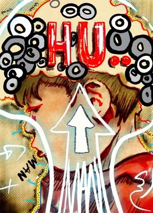
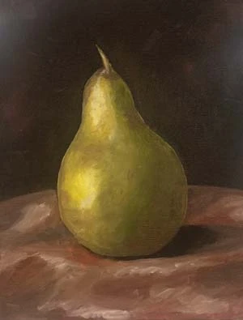
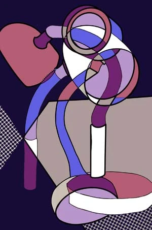
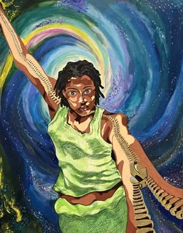

Been There Done That Made by Layers of Print-makingCountdown 'Till Graduation Made with ProcreateHuman With an Emphasis on "Man" on Paper Original

Human With an Emphasis on "Man" Revision Done With ProcreateMermaid Progress Sketch

Still-Life Oil Painting of a PearQR Brain Done With Procreate

Study Lamp Digitally Drawn With Procreate in Multiple Angles

What I Have to Offer Painting Mixed Media